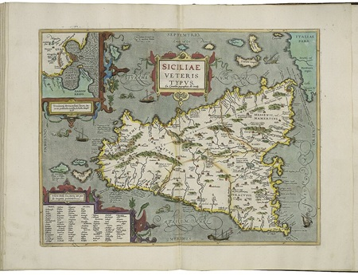

La Sicile

Pourquoi la Sicile était si importante ?
La Sicile est la plus grande île de la Méditerranée. Située entre l'Italie et l'Afrique du Nord, elle occupait une position stratégique idéale. Celui qui contrôlait la Sicile contrôlait les routes maritimes entre l'est et l'ouest de la Méditerranée.
L'île était aussi extrêmement fertile. Elle produisait d'énormes quantités de blé, ce qui en faisait le grenier à blé de la région. Pour Rome comme pour Carthage, posséder la Sicile signifiait nourrir ses armées et s'enrichir.
Source : Wikipedia — Sicile antique
Carthage et la Sicile
Avant les guerres puniques, Carthage contrôlait déjà une grande partie de la Sicile, notamment la côte ouest de l'île. Elle y avait installé plusieurs colonies et comptait sur l'île pour ses routes commerciales en Méditerranée.
Pour Carthage, perdre la Sicile était impensable. C'était une partie essentielle de son empire commercial. La première guerre punique éclate justement à cause d'un conflit en Sicile, dans la ville de Messine, en 264 av. J.-C.
Source : Wikipedia — Première guerre punique
Rome et la Sicile
Rome voyait la Sicile comme une menace si elle restait aux mains de Carthage — une base d'attaque trop proche de l'Italie. Mais elle y voyait aussi une énorme opportunité : s'emparer de l'île signifiait contrôler le commerce et le blé de toute la région.
Après 23 ans de guerre, Rome finit par remporter la Sicile en 241 av. J.-C. L'île devient la toute première province romaine de l'histoire — le début de la construction d'un empire qui allait dominer le monde antique pendant des siècles.
Source : Wikipedia — Sicile province romaine